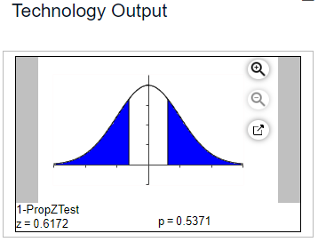
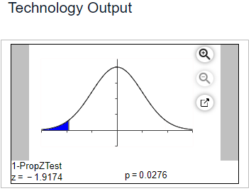
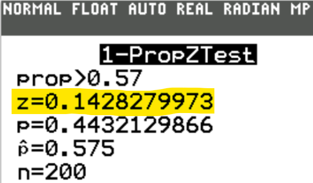
| Adults Surveyed | |
| Regularly takes supplemental vitamins | 91 |
| Does not regularly take supplemental vitamins | 79 |
| Total | 170 |
| Urban Families Surveyed | Rural Families Surveyed |
| $x_1$ = 12 | $x_2$ = 40 |
| $n_1$ = 75 | $n_2$ = 140 |
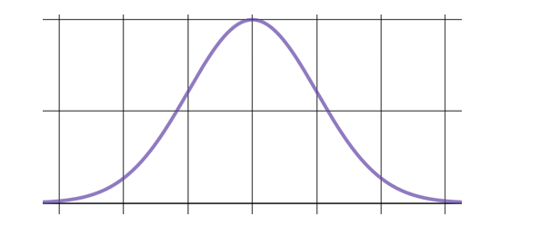
| 98.4 | 98.3 | 99.0 | 96.2 | 98.3 |
| 98.2 | 97.3 | 99.2 | 98.9 | 97.1 |
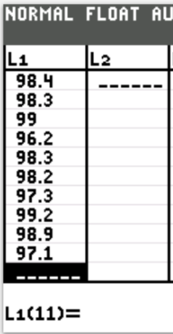
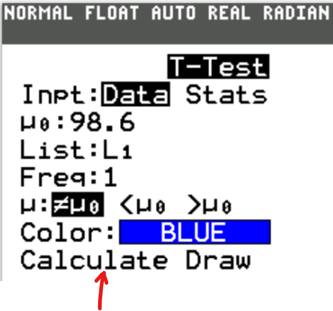
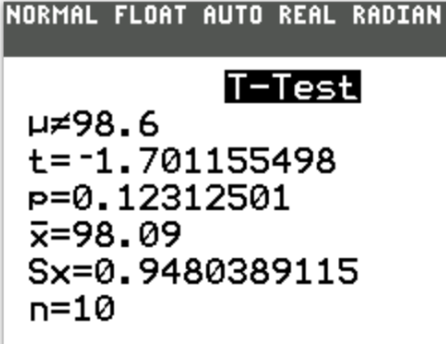
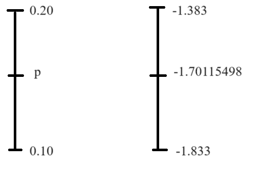
| Num Categories | 7 | Test statistic, χ² | 1731.386 |
| Degrees of freedom | 6 | Critical χ² | 12.592 |
| Expected Freq | 114.0000 | P-Value | 0.0000 |
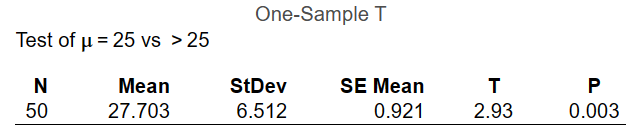
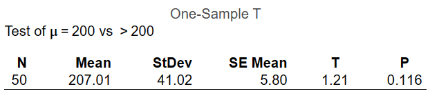
| Integer | Times Chosen |
|---|---|
| One | 16 |
| Two | 2 |
| Three | 7 |
| Four | 11 |
| Five | 7 |
| Integer | Observed Values, O | Expected Values, E | $O - E$ | $(O - E)^2$ | $\dfrac{(O - E)^2}{E}$ (to 5 decimal places) |
|---|---|---|---|---|---|
| One | 16 | 8.6 | 7.4 | 54.76 | 6.36744 |
| Two | 2 | 8.6 | −6.6 | 43.56 | 5.06512 |
| Three | 7 | 8.6 | −1.6 | 2.56 | 0.29767 |
| Four | 11 | 8.6 | 2.4 | 5.76 | 0.66977 |
| Five | 7 | 8.6 | −1.6 | 2.56 | 0.29767 |
| $\chi^2 = \Sigma \dfrac{(O - E)^2}{E} = 12.69767$ | |||||
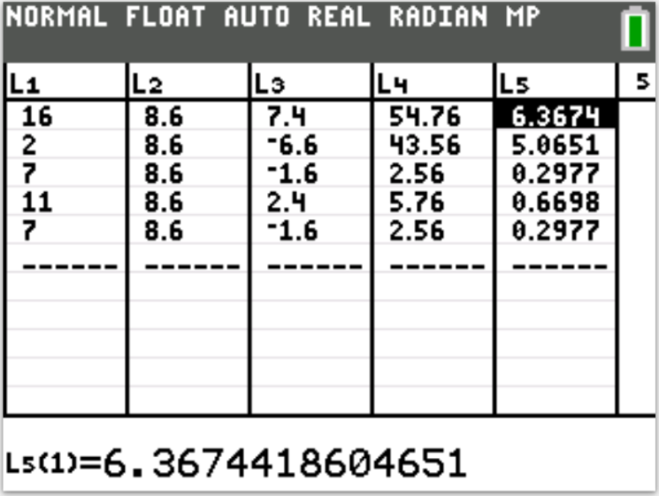
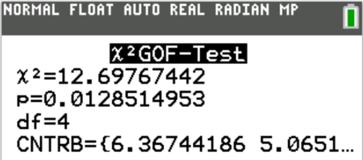
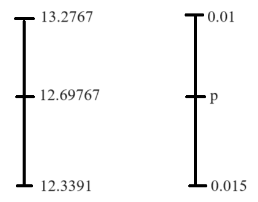
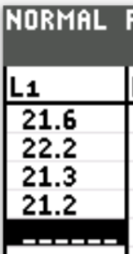
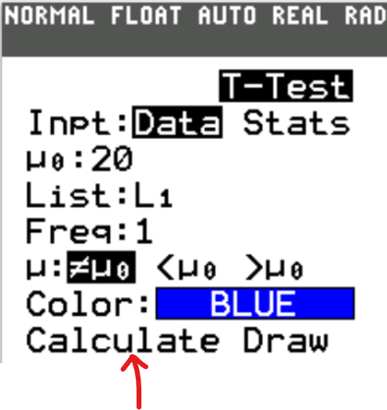
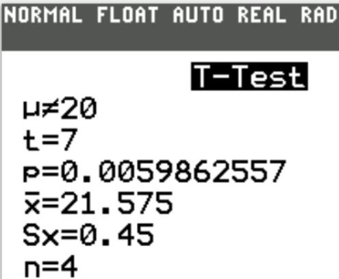
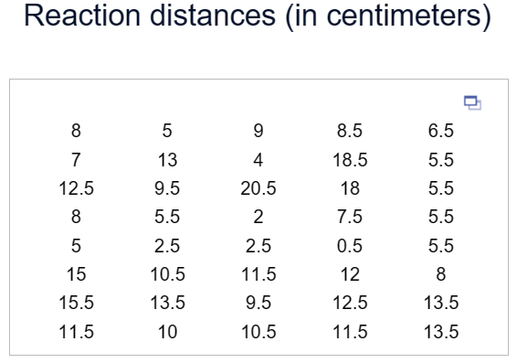
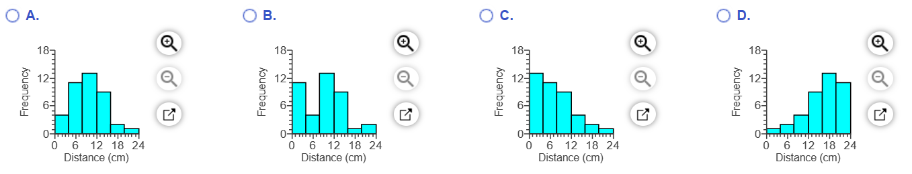
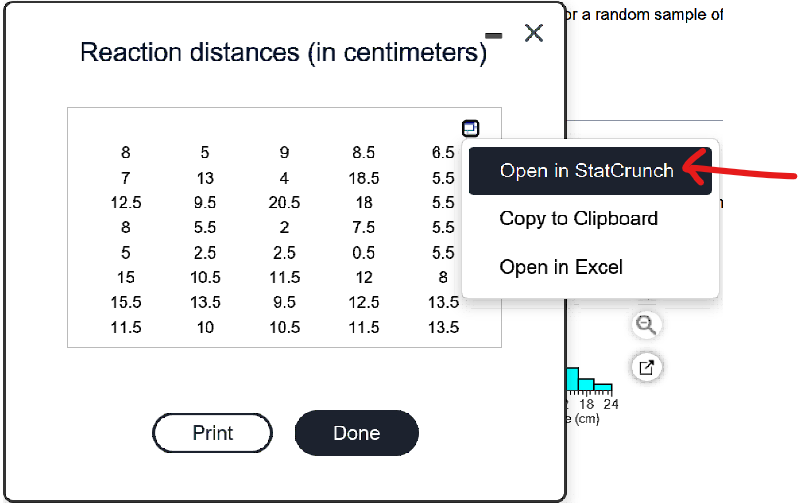
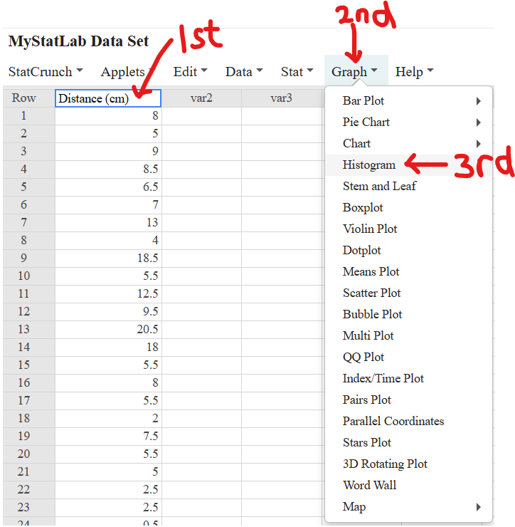
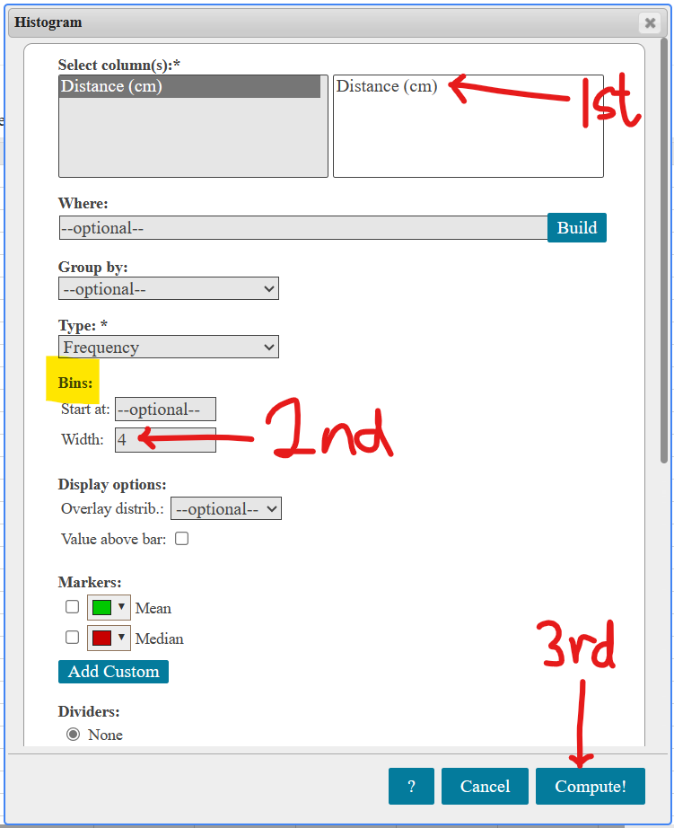
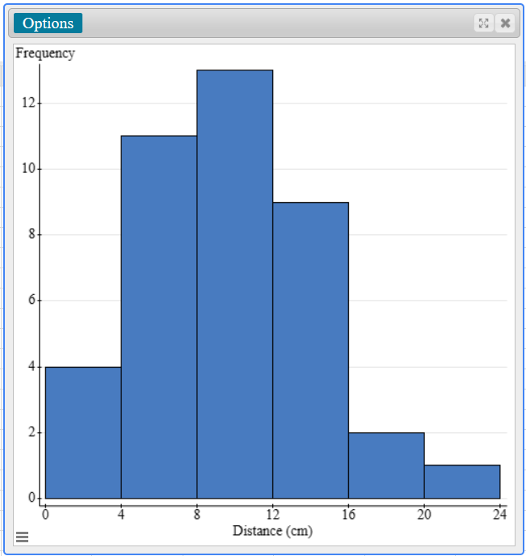
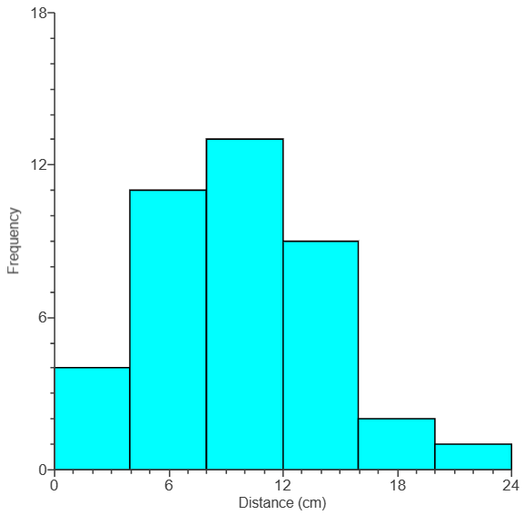
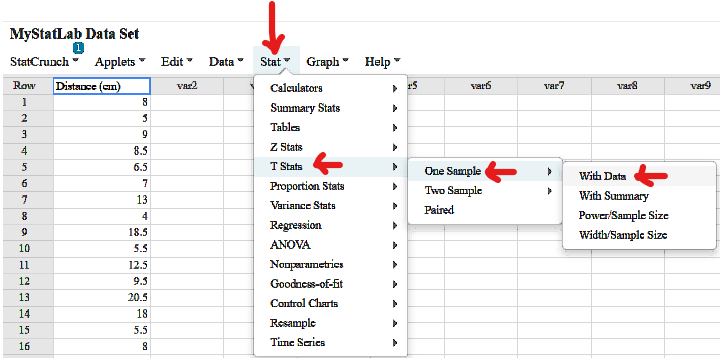
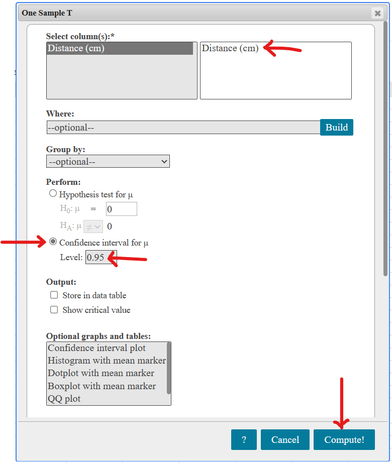
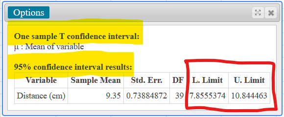
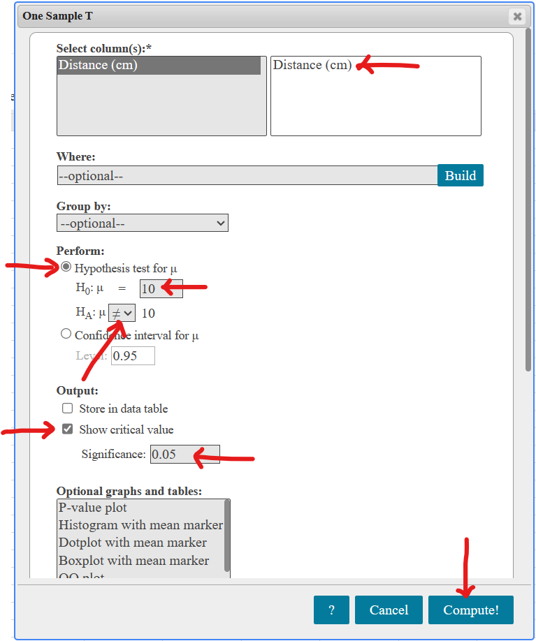
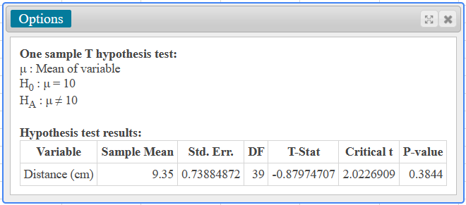